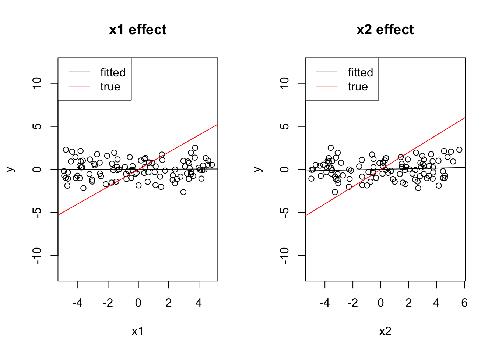

ANOVA stands for ANalysis Of VAriance. The basic idea is to find out how much of the signal (variance) is explained by different factors. We had already short introduced ANOVA in the section on categorical predictors.
The problem with explaining ANOVA is that the term is overfraught with historical meanings and explanations that are no further relevant. It used to be that ANOVA is a stand-alone method that you use for experimental designs with different treatments, that ANOVA assumes normal distribution and partitions sum of squares, that there are repeated-measure ANOVAS and all that, and those varieties of ANOVA partly still exist, but in general, there is a much simpler and general explanation of ANOVA:
Modern explanation: ANOVA is not a statistical model, but a hypothesis test that can be performed on top of any regression model. What this test is doing is to measure how much model fit improves when a predictor is added, and if this improvement is significant.
3.1.1 An example
As an example, here is a ANOVA (function aov()) performed on the fit of a linear model
fit =lm(Ozone ~ Wind + Temp, data = airquality)summary(aov(fit))
Df Sum Sq Mean Sq F value Pr(>F)
Wind 1 45284 45284 94.81 < 2e-16 ***
Temp 1 25886 25886 54.20 3.15e-11 ***
Residuals 113 53973 478
---
Signif. codes: 0 '***' 0.001 '**' 0.01 '*' 0.05 '.' 0.1 ' ' 1
37 observations deleted due to missingness
In the standard ANOVA for the LM, model fit is measured by the reduction in residual sum of squares. Let’s look at the example above. In the ANOVA table above, we (virtually) start with an intercept only model. Now, what the table tells us is that adding Wind to the model reduces the Sum Sq. by 45284, and adding also Temp reduces the Sum Sq by another 25886, which leaves us with 53973 residual sum sq. From this, we can also conclude that the total variance of the response is 53973 + 25886 + 45284 = 125143. Let’s check this:
sum((fit$model$Ozone -mean(fit$model$Ozone))^2)
[1] 125143.1
Thus, we can conclude that the R2 explained by each model component is
53973/125143# Wind
[1] 0.4312906
25886/125143# Temp
[1] 0.2068514
45284/125143# Residual
[1] 0.361858
Moreover, the ANOVA table performs tests to see if the improvement of model fit is significant against a null model. This is important because, as mentioned before (particular in the chapter on model selection), adding a predictor always improves model fit.
To interpret the p-values, consider that H0 = the simpler model is true, thus we test if the improvement of model fit is higher than what we would expect if the predictor has no effect.
3.1.2 Customizing the partitioning
There are a number of cases where it can make sense to perform an ANOVA for larger parts of the model. Consider, for example, the following regression:
fit =lm(Ozone ~ Wind +I(Wind^2) + Temp +I(Temp^2), data = airquality)
Maybe, we would like to ask how much variance is explained by Wind + Wind^2, and how much by Temp + Temp^2. In this case, we can perform custom ANOVA, using the anova() function that we already introduced in the section on model selection via likelihood ratio tests (LRTs).
m0 =lm(Ozone ~1, data = airquality)m1 =lm(Ozone ~ Wind +I(Wind^2) , data = airquality)m2 =lm(Ozone ~ Wind +I(Wind^2) + Temp +I(Temp^2), data = airquality)anova(m0, m1, m2)
Analysis of Variance Table
Model 1: Ozone ~ 1
Model 2: Ozone ~ Wind + I(Wind^2)
Model 3: Ozone ~ Wind + I(Wind^2) + Temp + I(Temp^2)
Res.Df RSS Df Sum of Sq F Pr(>F)
1 115 125143
2 113 64360 2 60783 81.397 < 2.2e-16 ***
3 111 41445 2 22915 30.686 2.464e-11 ***
---
Signif. codes: 0 '***' 0.001 '**' 0.01 '*' 0.05 '.' 0.1 ' ' 1
3.2 Fundamental issues in ANOVA
There are three basic problems that we will come back again when generalizing this principle across a range of models:
How should we measure “improvement of model fit”. Traditionally, improvement is measured by the reduction of the residual sum of squares, but for GLMs, we will have to expand this definition
How should we test if the improvement in fit is significant? For simple models, this is not so much a problem
How should we partition variance if predictors are collinear, and thus the order in which predictors are included matters
Should we correct for complexity?
Let’s look at the problem one by one:
3.2.1 Measuring model fit
The definition of model fit via sum of squares makes sense as long as we work with linear models.
For GLMs, this definition doesn’t make sense any more. A number of so-called pseudo-R2 metrics have been proposed. Most of them are based on the likelihood (as a measure of model fit) and try to recover as far as possible the properties of an R2 for the linear model.
A common metrics is McFadden pseudo-R2, which is defined as 1-[LogL(M)/LogL(M0))], where M is our model, and M0 is an intercept only model.
3.2.2 Testing if the improvement is significant
The test used in our example before is an F-test. The F-test is used for models that assume normal distribution. The F-test can be interpreted as a special case of a likelihood ratio test (LRT), which we already used in the chapter on model selection. An LRT can be used on two nested models, with M0 being the simpler model, and makes the following assumptions:
H0 = M0 is true
Test statistic = likelihood ratio -2 [MLE(M0)/MLE(H1)]
Then, under relatively broad conditions, the test static will be chi-squared distributed, with df = difference residual df (parameters) of the models M1, M0
This setup works for LMs and GLMs, but runs into problems when the definition how many df a model has is unclear. This is in particular the case for mixed models. In this case, one can resort to simulated LRTs. Simulated LRTs are a special case of the boostrap, which is a very general and popular method to generate nonparametric confidence intervals and null distributions. We will talk in detail about these methods in the chapter on nonparametric methods, but because this method is crucial for mixed models, I want to shortly explain it already here:
The difference between a parametric and a nonparametric test is that the latter does not make assumptions about the test statistic (point 3 above), but somehow generates the latter from the data. The parametric bootstrap does this in the following way:
Simulate data from H0 (= the fitted model M0)
Re-fit M0 and M1, and calculate likelihood ratios
Repeat n times to get an idea about the expected increase in likelihood when moving to M1 under the assumption that M0 is correct
library(DHARMa)
This is DHARMa 0.4.6. For overview type '?DHARMa'. For recent changes, type news(package = 'DHARMa')
m0 =lm(Ozone ~ Wind , data = airquality)m1 =lm(Ozone ~ Wind + Temp, data = airquality)simulateLRT(m0, m1)

DHARMa simulated LRT
data: m0: m0 m1: m1
LogL(M1/M0) = 22.723, p-value < 2.2e-16
alternative hypothesis: M1 describes the data better than M0
# for comparisonanova(m0, m1)
Analysis of Variance Table
Model 1: Ozone ~ Wind
Model 2: Ozone ~ Wind + Temp
Res.Df RSS Df Sum of Sq F Pr(>F)
1 114 79859
2 113 53973 1 25886 54.196 3.149e-11 ***
---
Signif. codes: 0 '***' 0.001 '**' 0.01 '*' 0.05 '.' 0.1 ' ' 1
3.2.3 Partitioning variance if order matters
Another key problem in ANOVA, and a source of much confusion, is how to deal with the fact that often, the order in which model components are added matters. Compare the results of our previous ANOVA with this one, where I only flipped the order of Temp and Wind:
fit =lm(Ozone ~ Temp + Wind, data = airquality)summary(aov(fit))
Df Sum Sq Mean Sq F value Pr(>F)
Temp 1 61033 61033 127.78 < 2e-16 ***
Wind 1 10137 10137 21.22 1.08e-05 ***
Residuals 113 53973 478
---
Signif. codes: 0 '***' 0.001 '**' 0.01 '*' 0.05 '.' 0.1 ' ' 1
37 observations deleted due to missingness
The result is markedly different, and reason is that the aov function performs a so-called type I ANOVA. The type I ANOVA adds variables in the order in which they are in the model formula, and because Temp and Wind are collinear, the variable that is added first to the model will absorb variation from the other, and thus seems to explain more of the response.
There are other types of ANOVA that avoid this problem. The so-called type II ANOVA shows for each variable only the part that is uniquely attributable to the respective variable
There is also type III, which is as type II, but avoids a similar problem for interactions, i.e. it discards the variance that is shared between main effects and interactions. Note that numeric variables should be centered and categorical variables should have orthogonal contrast when running a type III ANOVA (see below).
Here is an overview of the situation for 2 predictors A and B and their interaction. The upper left figure corresponds to the case where we have no collinearity between either of those variables. The figure on the top right (and similarly types I - III) are the three possible types of ANOVA for variables with collinearity. The “overlap” between the circles depicts the shared part, i.e. the variability that can be expressed by either variable (due to collinearity). Note that the shares in Type II, III do not add up to 1, as there is a kind of “dark variation” that we cannot securely add to either variable.
Which type of ANOVA is most appropriate? Unfortunately, the answer is both “it depends on what you want to know” and “there is a lot of discussion about this topic”. I would say the following:
If you have an orthogonal, balanced design, it doesn’t matter.
If not, type I is really only appropriate if you explicitly want to have the order-dependence. There may be some rare cases for this, e.g. if you want to say my regression should first explain everything it can by variable A, and then I only want to see if variable B adds something.
If you want to test for significance and partition R2 in a fair way, you should either choose type II or type III ANOVA. Discussions about which is preferable are ongoing, see e.g. (Hector, Von Felten, and Schmid 2010). As you will see when reading this, most of these discussion evolve around your exact definition of the “R2 of an interaction” and what exactly you want to test.
Caution
Note that, apart from collinearity and balance, also centering of the variables can affect the shared component between main effects and interactions, and thus the variance partitioned in a type III ANOVA. To understand this, consider the following: in a regression x1*x2, where both numeric predictors x1, x2 are centered, the interaction cannot create an average main effect on either x1 or x2, because either predictor has a equal amount of positive and negative values. If x1,x2 are uncentered, however, it is possible to make the regression predict increasing values with increasing x1 on average by setting an intercept value alone.
For that reason, working with uncentered predictors will lead to an increased shared variance between x1, x2 and the interaction x1:x2, and thus to lower SumSq values for the main effects in the type III ANOVA. You can see this by running the following code:
fit =lm(Ozone ~scale(Temp) *scale(Wind), data = airquality)fit2 =lm(Ozone ~ Temp * Wind, data = airquality)car::Anova(fit, type ="II")car::Anova(fit2, type ="II")car::Anova(fit, type ="III")car::Anova(fit2, type ="III")
For categorical variables, the same thing can happen - the choice of contrasts (see section on contrasts) will influence the amount of shared variation between main effects and the interactions. When using orthogonal contrasts, this shared component is minimized, because the interaction cannot explain . Let’s do a small example, where we compare a regression with treatment contrasts (which are not orthogonal) to Helmert contrasts (which are orthogonal):
airquality$fMonth =as.factor(airquality$Month)fit1 =lm(Ozone ~ Temp * fMonth , data = airquality)fit2 =lm(Ozone ~ Temp * fMonth , data = airquality,contrasts =list(fMonth ="contr.helmert"))car::Anova(fit1, type ="III")car::Anova(fit2, type ="III")
Let’s compare the results to an ANOVA without an interaction (note that in this case, type II / III) are identical for all sensible contrasts.
fit1 =lm(Ozone ~ Temp + fMonth , data = airquality)car::Anova(fit1, type ="III")
If you run this, you will see that the Helmert contrasts (any other orthogonal contrasts would do as well) match much better with the results of the model without interaction, because they de-correlate the variance explained by the main effects and the interactions. Because of this, it is usually advised to use orthogonal contrasts (note: the default treatment contrasts are not orthogonal) when running a type III ANOVA with 2-way interactions between two categorical variables.
Excercise
Try out the difference between type I, II, III ANOVA for the airquality data set, either for the simple Wind + Temp model, or for more complicated models. If you want to see the effects of Type III Anova, you need to add an interaction (see next section).
Solution
Let’s use the model with Wind, Temp, Solar.R, and their interactions. Wind and Temp, and Solar.R and Temp are collinear.
Call:
lm(formula = Ozone ~ (scale(Wind) + scale(Temp) + scale(Solar.R))^2,
data = airquality)
Residuals:
Min 1Q Median 3Q Max
-38.685 -11.727 -2.169 7.360 91.244
Coefficients:
Estimate Std. Error t value Pr(>|t|)
(Intercept) 38.025 2.052 18.535 < 2e-16 ***
scale(Wind) -11.801 2.087 -5.654 1.38e-07 ***
scale(Temp) 15.689 2.172 7.222 8.78e-11 ***
scale(Solar.R) 8.664 2.157 4.016 0.000112 ***
scale(Wind):scale(Temp) -5.377 1.966 -2.735 0.007332 **
scale(Wind):scale(Solar.R) -2.294 2.122 -1.081 0.282122
scale(Temp):scale(Solar.R) 4.315 2.084 2.070 0.040889 *
---
Signif. codes: 0 '***' 0.001 '**' 0.01 '*' 0.05 '.' 0.1 ' ' 1
Residual standard error: 19.17 on 104 degrees of freedom
(42 observations deleted due to missingness)
Multiple R-squared: 0.6863, Adjusted R-squared: 0.6682
F-statistic: 37.93 on 6 and 104 DF, p-value: < 2.2e-16
A last problem is that model components with more complexity (df) will always tend to explain more variance. We can see this when a model with a separate mean per day:
m =lm(Ozone ~as.factor(Day) , data = airquality)summary(aov(m))
Df Sum Sq Mean Sq F value Pr(>F)
as.factor(Day) 30 41931 1398 1.428 0.104
Residuals 85 83212 979
37 observations deleted due to missingness
The ANOVA tells us that this variable Day explains around 1/3 of the variation in the data, although it is not even significant. Because of this problem, the summary.lm() function reports a raw and an adjusted R2 for each model. The adjusted R2 tries to correct the R2 for the complexity of the model.
Here, we see that the adjusted R2 is considerably lower than the raw R2, even though not zero.
In general, reliably adjusting R2 components for complexity in an ANOVA is very complicated. I would recommend that
If you report raw components (which is the default in most papers), consider that this is a description of your model, not an inference about the true variance created by the respective factor, and include in your interpretation that variables or model components with more df will always tend to explain more variance
Alternatively, if the true variance is really crucial for your study, you can adjust R2 by a null expectation, similar to the parametric bootstrap for the LRT. However, because you subtract what is expected under H0, this will be a conservative estimate.
3.3 Relationship between lm and other hypotheses tests
ANOVA is just one example of the close relationship between the lm and other null hypothesis significance tests. ANOVA can either be seen as a special test (traditional view), or as a special evaluation of a fitted lm (modern view). I would recommend taking the modern view, as it easily generalizes to GLMs and other more advanced regression models such as GLMMs.
It is interesting to consider more generally which hypothesis tests can be obtained by looking at certain results or tests on the linear model. As you can see in the table below, there are many classical hypothesis tests that are equivalently or nearly equivalently tested by a linear model.
Common statistical tests with linear models
Hypothesis
R function
Equivalent linear model
Two groups differ in their means
unpaired t.test
t.test(y_1, y_2)
lm(c(y_1, y_2)~c(g_1, g_2))
Two groups differ in their means
paired t.test
t.test(y_1, y_2, paired = TRUE)
lm(y_2-y_1~1)
y depends on continuous x
Pearson correlation
cor.test(x, y)
lm(y~x) note: only near-equivalent
y depends on continuous x
Spearman correlation
cor.test(x, y, method = "spearman")
lm(rank(y)~rank(x)) note: only near-equivalent.
y differs within a group
One-way ANOVA
aov(y~group)
lm(y~group) with subsequent ANOVA
Based on this, one could think it doesn’t matter then if we use a regression model or a hypothesis test. However, the advantage of the regression model is that
It provides a richer output
It provides the same output for all cases, with clear ideas about how to check residuals etc.
It allows to adjust for the effects of covariates
3.4 Case studies
3.4.1 Plant Height
Let’s look at our plant height case study from the previous chapter. Which type of ANOVA should you run to analyze the model? Compare results to “less appropriate” alternatives.
library(EcoData)fit =lm(loght ~ temp * lat, data = plantHeight)summary(fit)
Call:
lm(formula = loght ~ temp * lat, data = plantHeight)
Residuals:
Min 1Q Median 3Q Max
-1.97905 -0.45112 0.01062 0.42852 1.74054
Coefficients:
Estimate Std. Error t value Pr(>|t|)
(Intercept) 2.917e-01 5.617e-01 0.519 0.604
temp 2.596e-02 2.040e-02 1.273 0.205
lat -8.948e-03 9.711e-03 -0.921 0.358
temp:lat 7.738e-05 3.061e-04 0.253 0.801
Residual standard error: 0.6869 on 174 degrees of freedom
Multiple R-squared: 0.2504, Adjusted R-squared: 0.2375
F-statistic: 19.37 on 3 and 174 DF, p-value: 6.95e-11
Solution
We have correlations between variables and an interaction, so should run a type II or III Anova, for III you should center predictors:
plantHeight$stemp =scale(plantHeight$temp, scale =FALSE) # only center variableplantHeight$slat =scale(plantHeight$lat, scale =FALSE)fit =lm(loght ~ stemp * slat, data = plantHeight)summary(fit)
Call:
lm(formula = loght ~ stemp * slat, data = plantHeight)
Residuals:
Min 1Q Median 3Q Max
-1.97905 -0.45112 0.01062 0.42852 1.74054
Coefficients:
Estimate Std. Error t value Pr(>|t|)
(Intercept) 4.694e-01 6.771e-02 6.932 7.78e-11 ***
stemp 2.838e-02 1.543e-02 1.839 0.0676 .
slat -7.700e-03 8.020e-03 -0.960 0.3383
stemp:slat 7.738e-05 3.061e-04 0.253 0.8007
---
Signif. codes: 0 '***' 0.001 '**' 0.01 '*' 0.05 '.' 0.1 ' ' 1
Residual standard error: 0.6869 on 174 degrees of freedom
Multiple R-squared: 0.2504, Adjusted R-squared: 0.2375
F-statistic: 19.37 on 3 and 174 DF, p-value: 6.95e-11
Note that we have centered our variables, let’s see what happens when we use the non centered variables:
fit2 =lm(loght ~ temp * lat, data = plantHeight)print(car::Anova(fit2, type ="III"))
Anova Table (Type III tests)
Response: loght
Sum Sq Df F value Pr(>F)
(Intercept) 0.127 1 0.2696 0.6043
temp 0.764 1 1.6198 0.2048
lat 0.401 1 0.8490 0.3581
temp:lat 0.030 1 0.0639 0.8007
Residuals 82.089 174
The shared proportion has proportionally gained a lot sum of squares!
Hector, Andy, Stefanie Von Felten, and Bernhard Schmid. 2010. “Analysis of Variance with Unbalanced Data: An Update for Ecology & Evolution.”Journal of Animal Ecology 79 (2): 308–16.